말로 설명하면 단축어가 만들어져요
이번 업데이트에서 진행자가 가장 추천하는 기능이에요. 단축어 앱에서 더하기 버튼을 누르면 입력창이 떠요. 여기에 하고 싶은 일을 평소 말하듯 적거나 말하면 앱이 단축어를 짜 줘요. 화면 아래 안내 문구가 그 순서예요. 단축어 앱 실행, 하단 '+' 버튼, 원하는 동작 설명이에요.
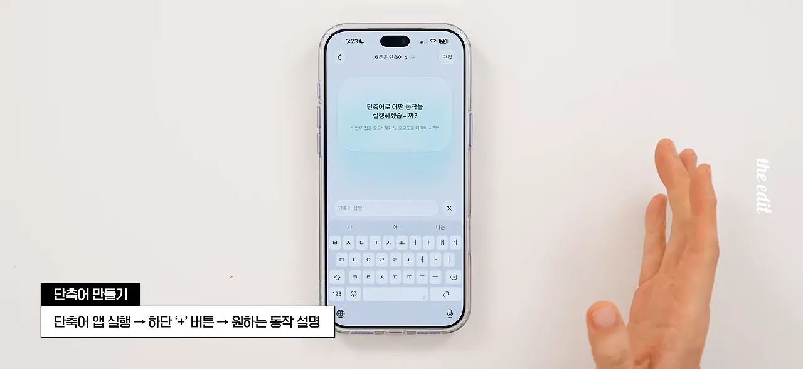
진행자는 타이핑 대신 음성으로 '내가 선택한 사진을 에어드롭으로 보낼 때 JPG(Joint Photographic Experts Group)로 확장자 변환해 줘'라고 말했어요. 잠시 뒤 초록색 카드가 뜨고, 이 단축어가 할 일 세 줄이 적혀 있어요. 사진 선택하기, 이미지를 JPEG(Joint Photographic Experts Group)로 변환하기, AirDrop으로 공유하기예요.
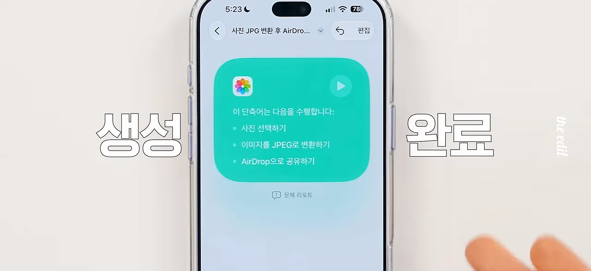
실행해 보면 사진을 고르는 창이 먼저 떠요. 고양이 사진 몇 장을 고르자 JPG로 바꾸는 작업이 돌았어요. 처음 한 번은 AirDrop으로 보내도 되는지 물어보고, '항상 허용'을 누르면 다음부터는 묻지 않아요. 맥북에서 받은 파일은 모두 JPG였어요.
만든 뒤에도 말로 고쳐요
결과가 마음에 안 들면 다시 말로 고치면 돼요. 진행자가 '에어드롭 하고 나서 원본 사진은 모두 삭제해 줘'라고 덧붙이자 카드 맨 아래에 '원본 사진 삭제하기' 줄이 생겼어요. 빨간 네모가 새로 붙은 단계예요.
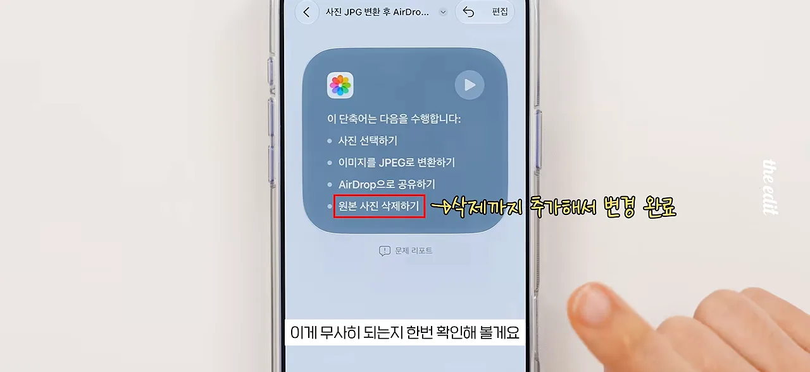
고치기 전과 후를 나란히 놓으면 이렇게 돼요. 앞의 세 단계는 그대로고, 마지막에 삭제 단계 하나만 늘었어요. 실행하면 삭제 전에 한 번 더 허락을 구해요.
사진 앱: 고르고, 찾고, 나누기
사진 앱에는 다섯 가지가 바뀌었어요. 장면 저장, 별점, 키워드, 직접 찍은 사진 모아 보기, 임시 공유 앨범이에요. 모두 많은 사진 속에서 원하는 것을 빨리 찾게 해 주는 변화예요.
동영상에서 한 장면을 사진으로
진행자는 쇼츠 썸네일로 쓸 장면을 찾으려고 동영상을 프레임 단위로 넘겼어요. 원하는 장면에서 멈추고 오른쪽 위 점 세 개 버튼(빨간 네모)을 누른 뒤 '비디오 프레임을 사진으로 저장'을 고르면 돼요. 앨범에 그 장면이 사진으로 따로 저장돼요.
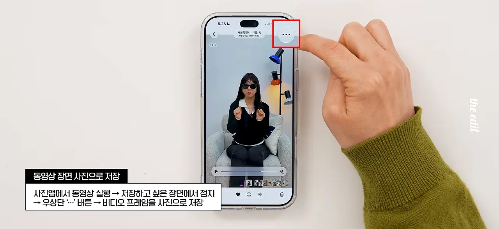
별점을 매기고 별점으로 골라 보기
별점은 먼저 켜야 보여요. 사진 앱 모음 탭에서 오른쪽 위 계정 아이콘을 누르고 '별점 제어 항목 보기'를 켜면, 사진마다 오른쪽 위에 작은 별 아이콘이 생겨요. 그걸 눌러 별 한 개부터 다섯 개까지 줄 수 있어요.
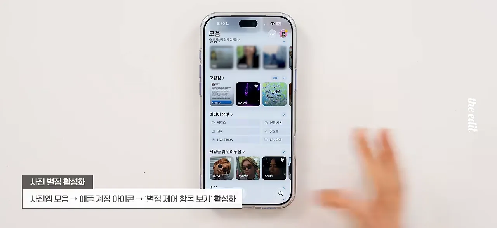
모아 볼 때는 보관함의 정렬 및 필터 버튼을 눌러요. 빨간 네모 속 메뉴에 '평가' 항목이 있고, 별 한 개부터 다섯 개까지 줄지어 있어요. 하나를 고르면 그 별점을 준 사진만 남아요.
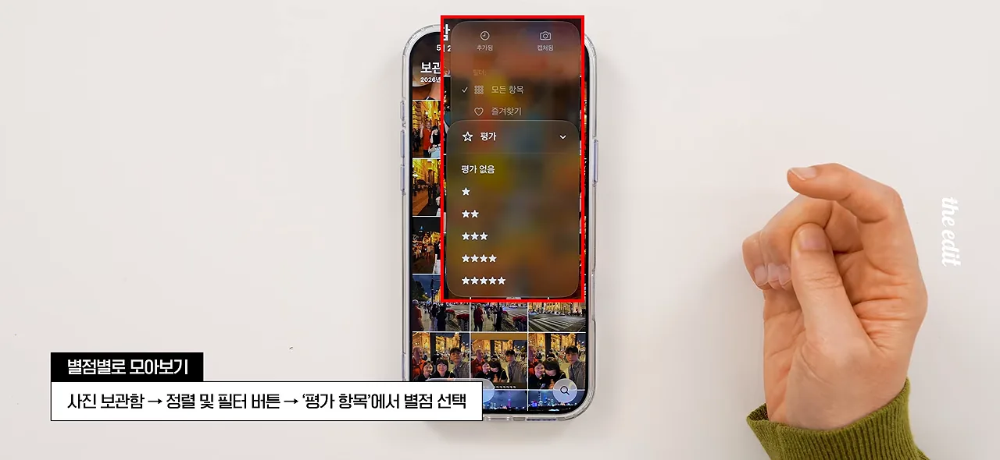
재미있는 건 진행자의 별점 기준이에요. 별 다섯 개 사진이 전부 음식이었는데, 사진이 잘 나와서가 아니라 맛있었던 음식이라 준 점수였어요. 비슷한 사진을 많이 찍었을 때 기준을 하나 정해 별점을 주면 나중에 찾기 편해져요.
키워드를 붙이고 즐겨찾기로 꺼내 쓰기
사진 한 장을 열고 위로 쓸어 올리면 정보 영역에 '키워드 추가' 칸(빨간 네모)이 새로 생겼어요. 여기에 단어를 적고 체크를 누르면 끝이에요.
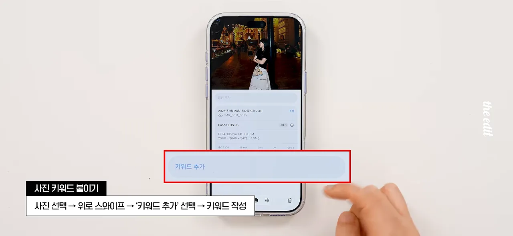
키워드로 찾으려면 한 단계가 더 필요해요. 모음 탭의 계정 아이콘에서 아래쪽 '키워드 관리'로 들어가면 지금까지 쓴 키워드가 쭉 나와요. 자주 쓸 것을 눌러 즐겨찾기에 넣어야 정렬 및 필터 메뉴에 키워드가 나타나요. 진행자는 '여행'과 '저조도'를 넣었고, 저조도를 고르자 어두운 곳에서 찍은 사진만 걸러졌어요.
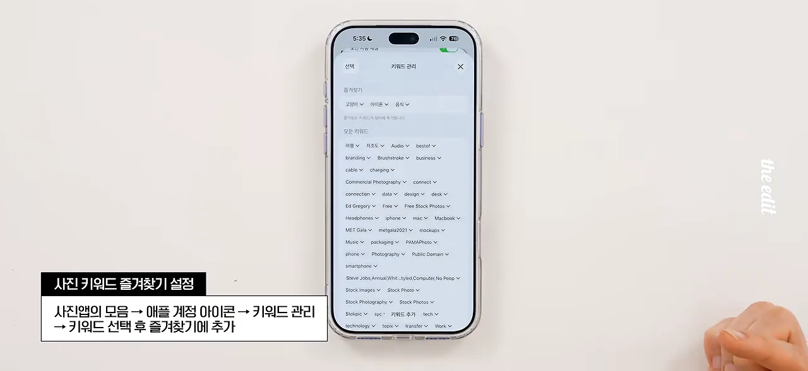
진행자의 평은 솔직해요. 잘 입력해 두면 쓸모는 있지만 귀찮다고 해요. 아이폰 사진 검색이 매끄럽지 않아서 이런 기능을 넣은 것 같다는 짐작도 덧붙였어요.
직접 찍은 사진만 모아 보기
모음 탭을 맨 아래까지 내리면 '기타' 묶음이 있어요. 펼치면 '내가 캡처함'이 새로 생겼어요. 스크린샷이나 내려받은 이미지는 빼고 카메라로 직접 찍은 사진만 들어 있어요.
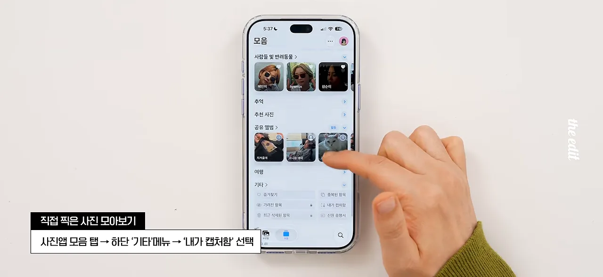
30일만 쓰는 임시 공유 앨범
모음 탭의 공유 앨범에서 새 앨범을 추가하면 이름과 사진을 넣는 화면이 나와요. 여기서 '임시 앨범으로 설정'을 켜면 앨범이 30일 동안만 유지돼요. 여행 사진을 잠깐 모을 때처럼 오래 둘 필요 없는 앨범에 맞아요.
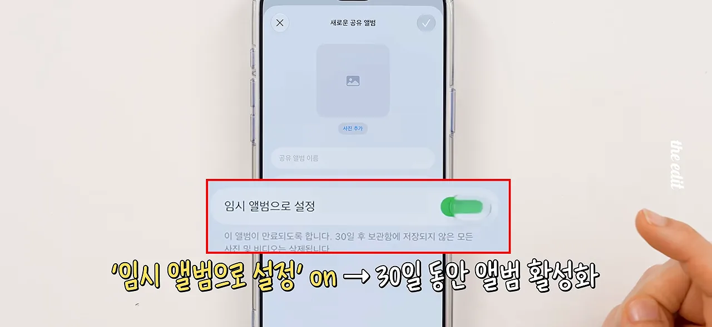
공유 옵션에서 '해당 링크를 가진 누구나'를 고르면 안드로이드폰이나 윈도우 컴퓨터를 쓰는 사람도 이 앨범에 참여할 수 있어요.
카메라와 화면을 내 취향대로
이 묶음은 화면을 내 손에 맞게 바꾸는 기능 네 가지예요. 어디로 들어가는지만 알면 각각 몇 초 만에 끝나요.
| 바뀐 것 | 들어가는 곳 |
|---|---|
| 카메라 위쪽 도구 고정 | 카메라 앱 상단 길게 누르기 → 사진 제어 항목 추가 |
| 잠금 화면 시계 작게 | 잠금 화면 길게 누르기 → 사용자화 → 시계 누르기 → 레이아웃 전환 버튼 |
| 리퀴드 글래스 투명도 | 설정 → 화면 모드 → 리퀴드 글래스 → 투명도 막대 |
| 초대형 위젯 | 홈 화면 빈 곳 길게 누르기 → 왼쪽 위 편집 버튼 → 위젯 추가 |
카메라에 자주 쓰는 도구 고정
카메라 앱 위쪽을 길게 누르면 '사진 제어 항목 추가' 판이 열려요. 조리개, 셔터 속도, 포맷, 야간 모드 같은 아이콘이 격자로 놓여 있어요. 이 중 최대 여덟 개를 골라 화면 위쪽 줄에 고정할 수 있어요.
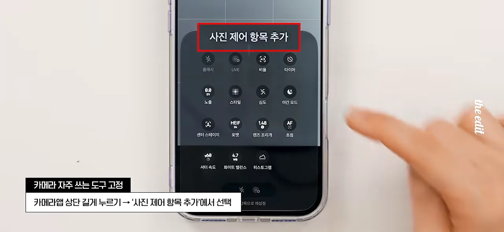
잠금 화면 시계를 작게
왼쪽이 바꾸기 전, 오른쪽이 바꾼 뒤예요. 큼직하던 5:41이 오른쪽에서는 날짜 옆에 작은 글씨로 들어가요. 그만큼 고양이 배경 사진이 덜 가려져요.
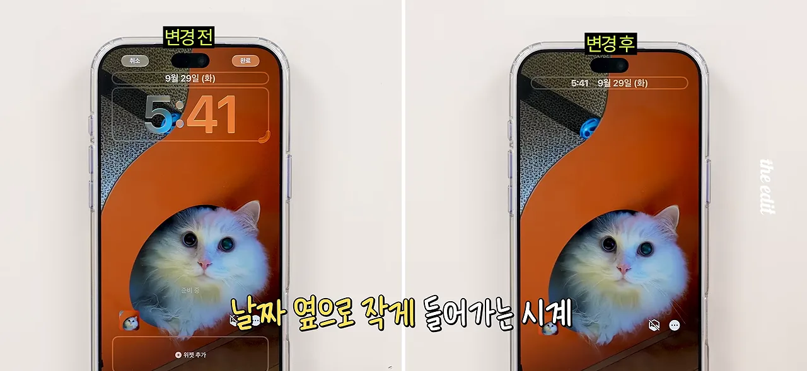
리퀴드 글래스 투명도 조절
설정의 리퀴드 글래스 화면 아래쪽에 막대가 하나 있어요. 막대를 움직이면 위쪽 미리보기 카드의 비침 정도가 바로 바뀌어요. 진행자는 3분의 1쯤으로 맞춰 투명한 쪽을 골랐어요.
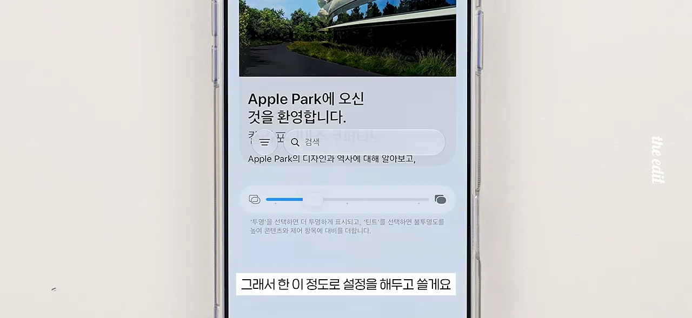
화면을 꽉 채우는 위젯
홈 화면 빈 곳을 길게 누르고 왼쪽 위 버튼을 누르면 위젯 추가 메뉴가 나와요. 캘린더를 고르면 새로 생긴 가장 큰 크기를 고를 수 있어요.
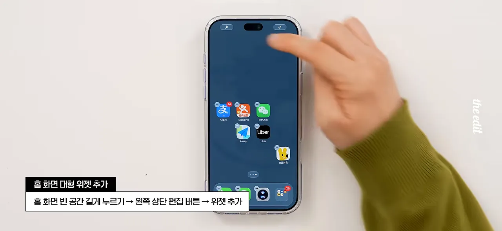
넣고 나면 캘린더 위젯 하나가 아래 독을 빼고 화면을 거의 다 차지해요. 날짜 29일 아래로 시간대별 일정 칸이 길게 보여요. 기존에 가장 컸던 캘린더 위젯보다 한 번에 보이는 일정이 훨씬 많아요.
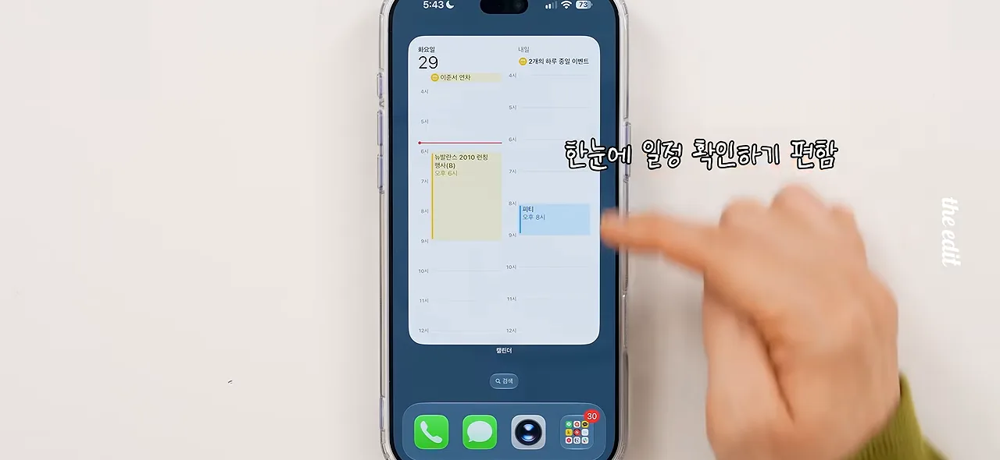
소리와 메시지 설정
소리와 관련된 변화는 네 가지예요. 알람 음량, 메시지 입력창 버튼, 에어팟 음색, 애플 뮤직 재생창이에요.
알람과 타이머 음량을 따로
영상 앞부분(02:44)에서 다룬 기능이에요. 지금까지는 알람 소리가 벨소리 음량을 따라갔어요. 설정 → 사운드 및 햅틱에서 '알람 및 타이머' 아래 '벨소리 음량에 맞추기'를 끄면 그 바로 아래 알람 전용 음량 막대가 생겨요.
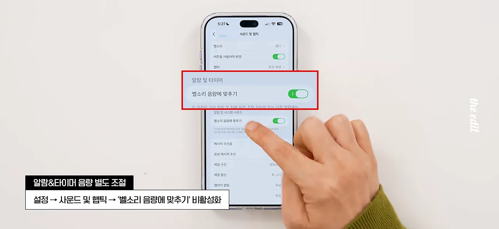
메시지 입력창 옆 버튼 바꾸기
메시지 입력창 오른쪽 끝 버튼을 바꾸거나 없앨 수 있어요. 설정 → 앱 → 메시지로 들어가 '텍스트 필드에 표시'를 누르면 세 가지 선택지가 나와요. 오디오 녹음, 받아쓰기 시작, 안 함이에요.
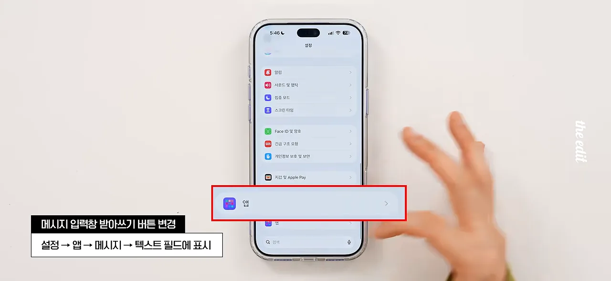
'텍스트 필드에 표시'를 누르면 세 항목이 나오고, 지금 쓰는 것에 체크가 돼 있어요.
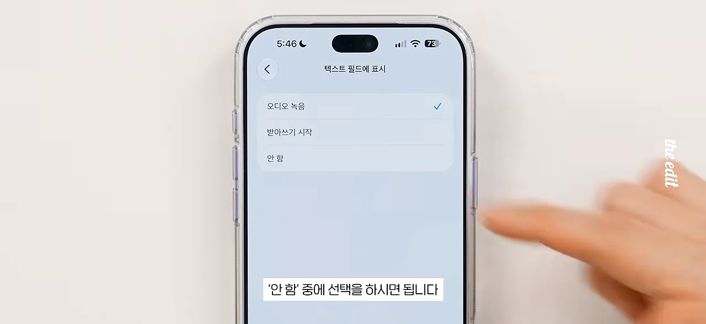
버튼을 없앴는데 음성 메시지를 보내고 싶을 때도 길이 있어요. 입력창 왼쪽 더하기 버튼을 누르면 카메라, 사진, 스티커 등이 나오는 메뉴가 떠요. 여기서 '오디오'(빨간 네모)를 고르고 녹음하면 돼요.
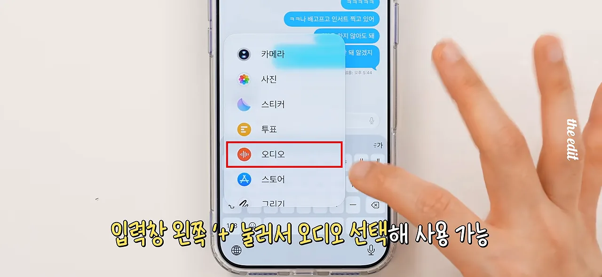
에어팟 저음·중음·고음 직접 조절
에어팟을 끼고 아이폰에 연결한 뒤 설정에서 내 에어팟 → 오디오 및 라우팅 → 이퀄라이저로 들어가요. 빨간 네모 속 '권장'과 '사용자 설정' 중 사용자 설정을 고르면 아래 그래프를 손으로 만질 수 있어요.
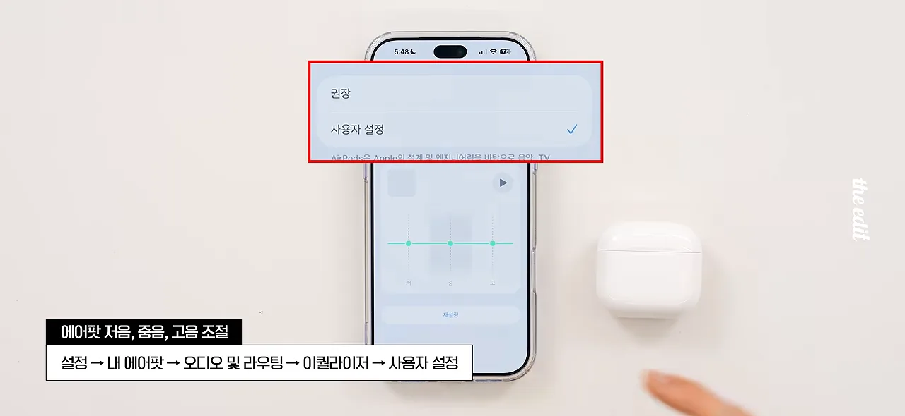
그래프에는 조절점이 세 개 있어요. 왼쪽이 저음, 가운데가 중음, 오른쪽이 고음이에요. 진행자는 양 끝을 올리고 가운데를 내려 V자 모양을 만들었어요. 베이스와 맑은 고음이 살고 목소리 쪽은 조금 물러나는 소리예요.
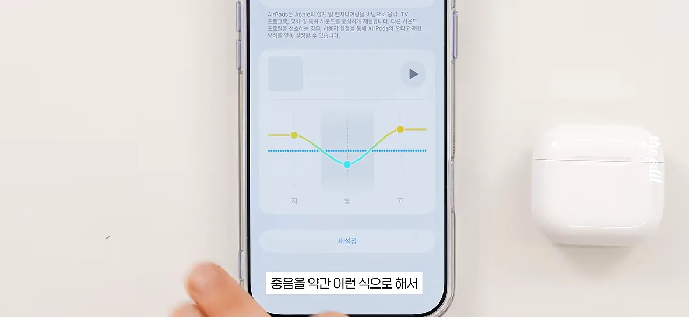
모든 에어팟이 되는 건 아니에요. 영상이 보여 준 지원 모델은 에어팟 4·5, 에어팟 프로 2·3, 에어팟 맥스 2이고, 펌웨어 업데이트가 먼저 돼 있어야 해요.
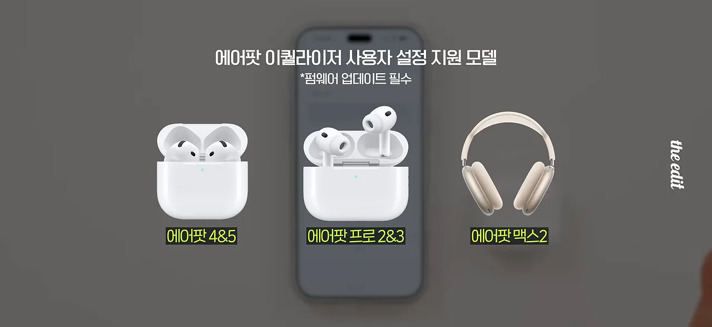
애플 뮤직 재생창 숨기기
애플 뮤직으로 노래를 들으면 잠금 화면 아래쪽에 재생창이 계속 떠 있어요. 이제 이 창을 왼쪽으로 밀어 지워도 음악은 멈추지 않아요.
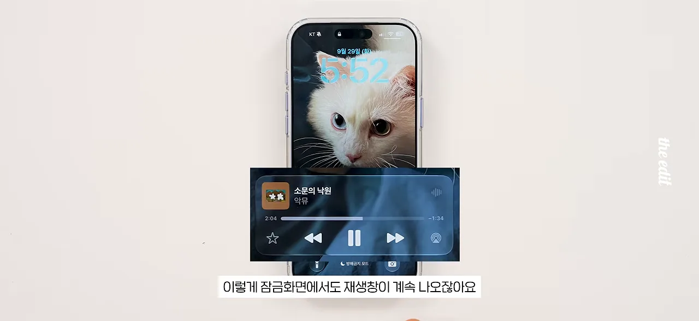
숨긴 뒤에는 제어 센터를 내려서 재생과 일시 정지를 해요. 오른쪽 위 빨간 네모가 음악 조작 칸이에요. 진행자도 굳이 싶은 기능이라면서, 잠금 화면을 깔끔하게 두고 싶은 사람에게는 쓸모 있겠다고 해요.
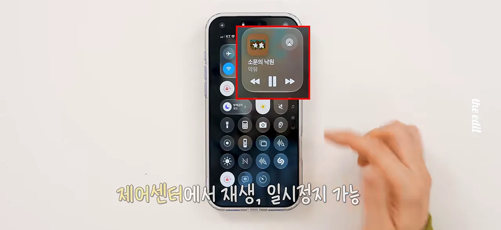
페이스타임과 사파리
페이스타임 얼굴과 풍경 함께 보여 주기
페이스타임 통화 중 뒤집기 버튼을 누르면 앞 카메라와 뒤 카메라가 동시에 켜져요. 화면 위쪽에는 앞 풍경이, 아래 작은 창에는 내 얼굴이 함께 나가요. 진행자는 동영상 촬영의 듀얼 캡처와 비슷한 기능이라고 소개해요.
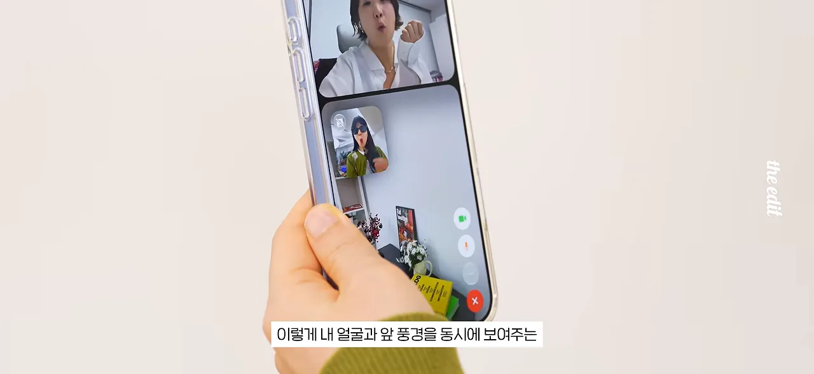
사파리가 웹사이트 변화를 알려 줘요
마지막은 사파리예요. 진행자는 디에디트 웹사이트에 새 글이 올라오면 알림을 받고 싶었어요. 주소창 왼쪽을 누르면 메뉴가 펼쳐지고, 그중 '알림 받기'(빨간 네모)를 골라요.
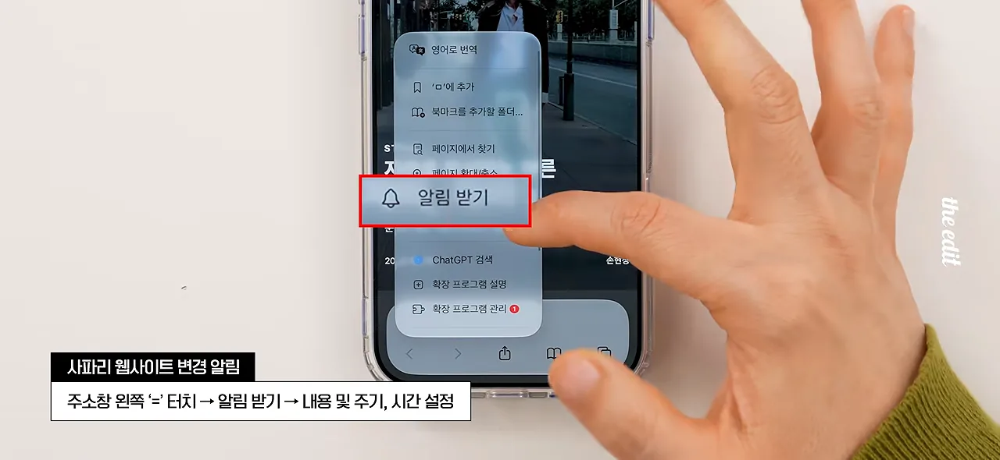
내용 칸에는 '새 소식이 나오면 알림'처럼 무엇을 지켜볼지 문장으로 적어요. 편집에서 주기는 매일, 시간은 오전 9시로 정했어요. 설정이 끝나면 페이지 맨 위에 '알림 받기: 새 소식이 나오면 알림'과 다음 확인 시각이 표시돼요.
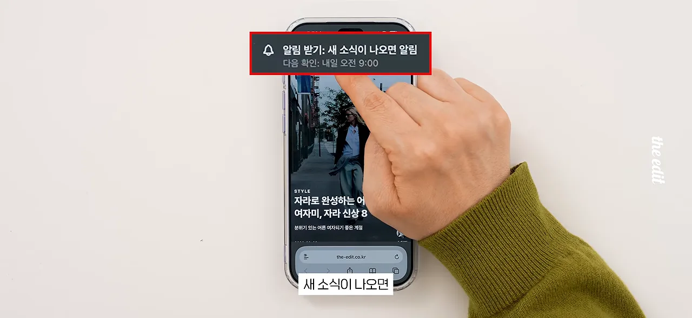
이 기능은 아무 아이폰에서나 되지 않아요. 영상 자막은 Apple Intelligence를 쓸 수 있는 아이폰 15 Pro 이상 모델에서만 된다고 짚어요.
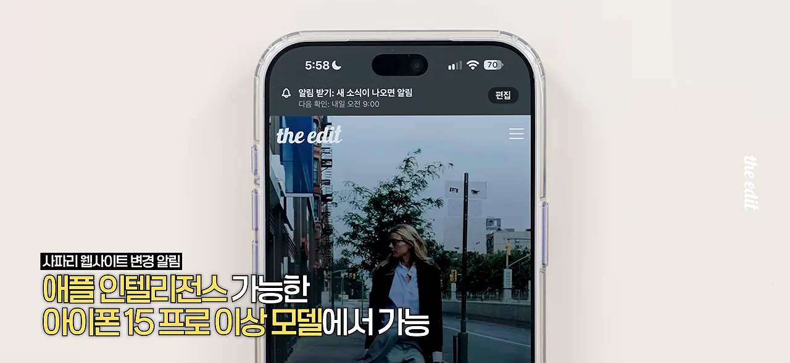
영상은 '이제서야 생겨서 황당한 기능도 있다'는 반응을 인정하면서 끝나요. 그래도 처음에 소개한 단축어 만들기만큼은 꼭 해 보라고 권해요.